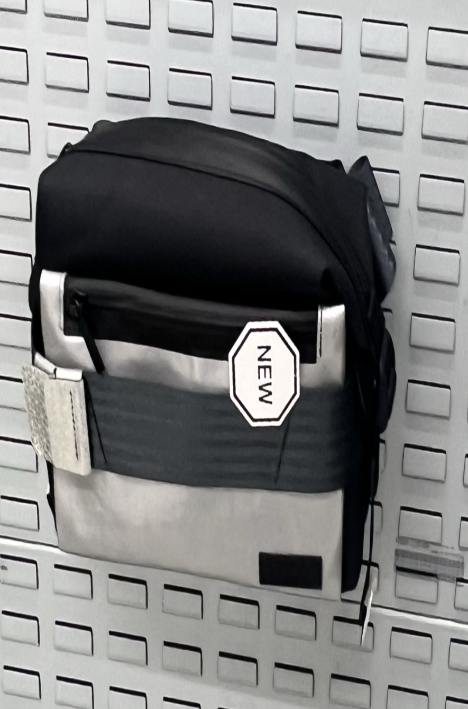
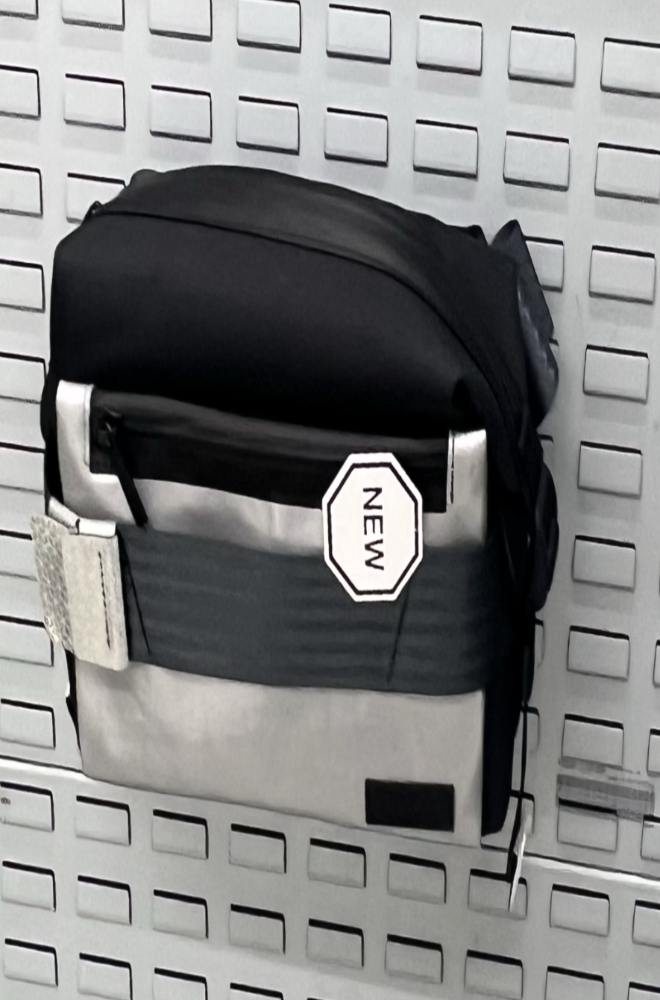

Ik vind de Freitag-producten leuk vanwege hun levendige kleuren en interessante vormen. Ja, ze kosten wel wat meer, maar je ziet gewoon dat ze goed gemaakt zijn en lang meegaan. Het feit dat ze ook duurzaam zijn, voegt extra waarde toe aan deze producten.